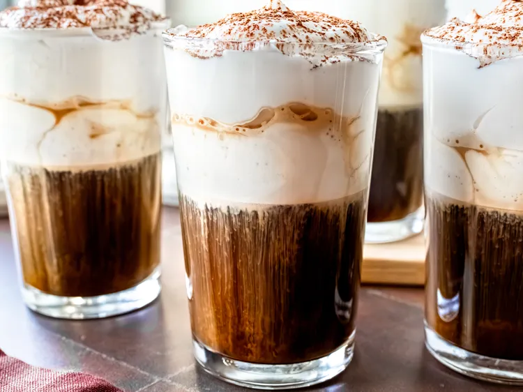

Home Page
Vienesse Coffee: Einspänner

This Einspänner will make you think you've stepped into a cozy cafe in Vienna, with its strong espresso
and a thick layer of rich, velvety cream on top of the espresso crema.
Ingredients
- 1 cup of heavy cream
- 2 tablespoons of sweetened condensed milk
- 1 tablespoon of sifted confectioner sugar
- 1 splash of vanilla extract (optional)
- 2 tablespoons of cocoa powder, sifted
- 8 shots hot espresso
Steps
- Chill a mixing bowl and beaters until very cold, 10 to 15 minutes.
- Pour cold heavy cream into the bowl; add condensed milk, confectioner's sugar, and vanilla. Beat on medium speed just until soft to medium peaks form.
- Brew 8 shots of espresso; pour 2 shots into each of 4 clear glass cups.
Top each glass with an equal amount of sweetened cream—you'll want a thick layer. Dust each cup with sifted cocoa powder. Enjoy!